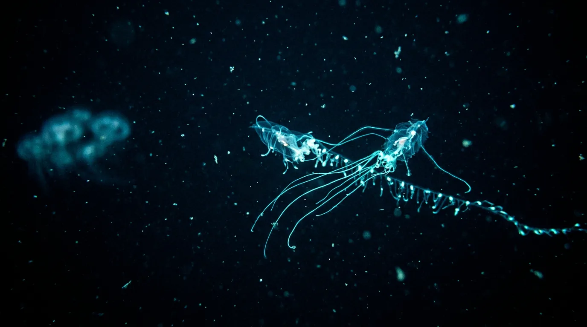

Marine bioluminescence
The Light
Below
Sunlight gives out somewhere around 200 metres, and everything beneath that — the overwhelming majority of the livable space on this planet — is lit, if at all, by the animals living in it. Roughly three quarters of the creatures surveyed in the open water column can make their own light, using a pigment called luciferin that releases a cold blue-green glow when it meets oxygen. They spend it carefully: a hatchetfish matches the faint glimmer above it so nothing hunting from below can pick out its silhouette, a vampire squid throws a cloud of luminous mucus instead of ink and leaves the burglar alarm behind while it slips away, and an anglerfish grows a lure it does not even fuel itself but rents out to bacteria. The photograph above was made with no light at all beyond what the animal in it was already emitting, which is the part worth sitting with — the deep sea is not a dark place so much as a place that decided to do its own lighting.